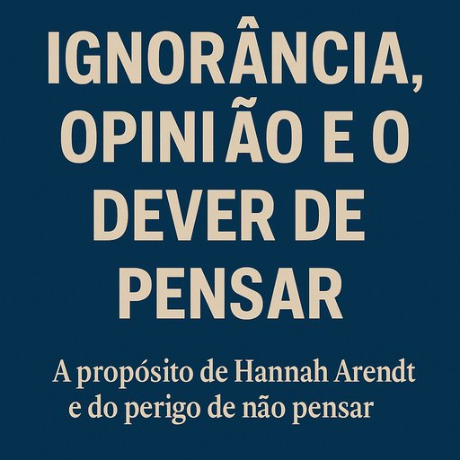

Publicado em 2025-06-18 11:43:33
Vivemos num tempo curioso: nunca houve tanto acesso à informação, e no entanto, o pensamento parece cada vez mais ausente. A ignorância — que sempre foi uma companheira da condição humana — já não se apresenta como ausência de saber, mas como opinião convicta e inquestionável.
Ora, sejamos claros: ignorância não é vergonha. Todos temos as nossas.
A verdadeira tragédia começa quando essa ignorância deixa de ser ponto de partida para o conhecimento e se transforma em trincheira de certezas ocas.
É aqui que o pensamento de Hannah Arendt se torna farol nesta noite densa.
No seu estudo sobre os julgamentos de Nuremberga — mais precisamente sobre Adolf Eichmann — Arendt identifica algo perturbador: o mal não era praticado por monstros sádicos ou psicopatas fanáticos, mas por homens banais, incapazes de pensar sobre as consequências dos seus actos.
Ela escreve:
“A essência do mal moderno é a ausência de pensamento.”
Este não-pensar — este esvaziamento da reflexão em nome da obediência, da conveniência, da opinião feita — é o verdadeiro perigo. Não é apenas ignorância. É desligar a mente e agir como autómato, repetir frases feitas, defender causas sem as compreender, rejeitar ideias novas porque fogem ao conforto do já conhecido.
A ignorância, quando humilde, busca saber. Mas a ignorância disfarçada de certeza combate o saber — com slogans, com sarcasmo, com a arrogância de quem não sabe que não sabe.
E assim nasce um dos males mais perigosos da sociedade moderna: a normalização do não-pensar.
Vê-se isto em todos os cantos:
O pensamento é um dever ético.
Pensar não é luxo de filósofos — é responsabilidade de cada cidadão livre.
Pensar é o que nos impede de nos tornarmos instrumentos cegos nas mãos de sistemas, ideologias ou lÃderes.
É o que nos protege da manipulação.
É o que nos salva da barbárie.
Hoje, mais do que nunca, precisamos de recuperar o valor do pensamento.
Pensar é parar, questionar, recusar os atalhos da ignorância confortável.
É dizer: “Não sei — mas quero saber.”
É abdicar da certeza fácil para abraçar a complexidade.
É resistir.
Como dizia Arendt: o pensamento é invisÃvel, mas os seus efeitos são profundamente reais.
E quando o pensamento se ausenta, o vazio é rapidamente preenchido — por slogans, por ideologias, por ordens cegas.
Que este seja o nosso alerta:
Ignorar é humano. Mas recusar pensar… é perigosamente desumano.
Artigo de Francisco Gonçalves
"Ignorar é humano. Mas recusar pensar… é perigosamente desumano.
O verdadeiro perigo não é não saber — é não querer saber.
É transformar a ignorância em bandeira e combater ideias com slogans.
Como alertou Hannah Arendt, o mal começa quando nos dispensamos de pensar."